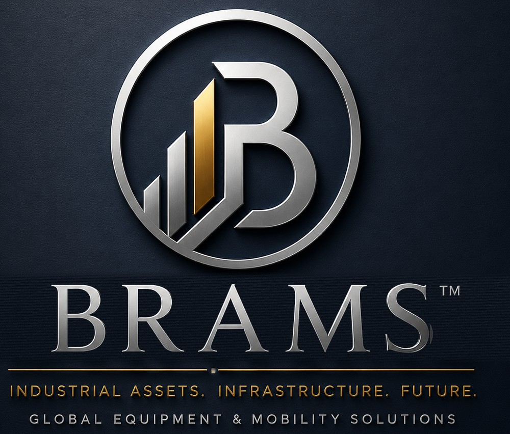
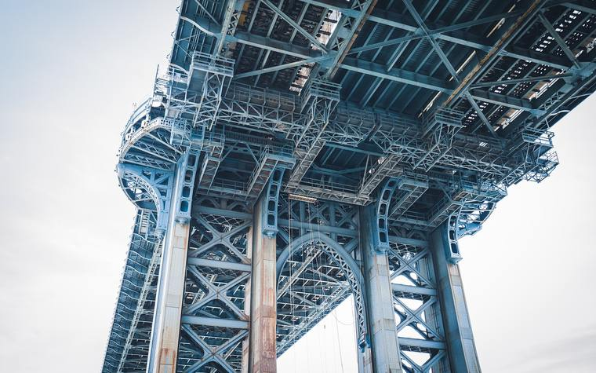
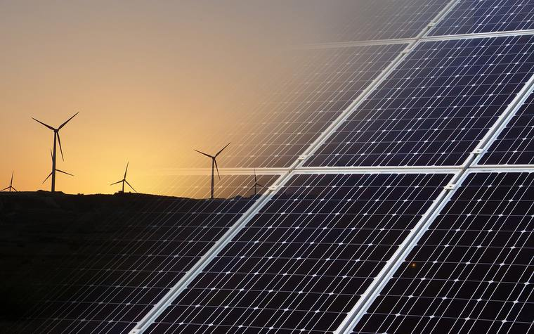
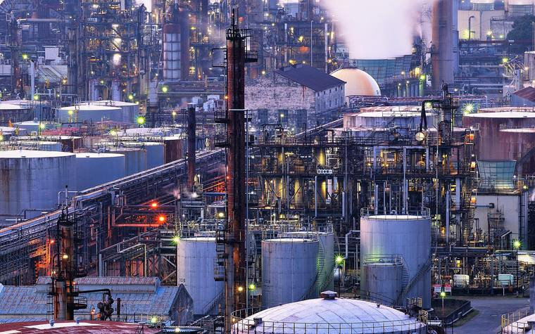
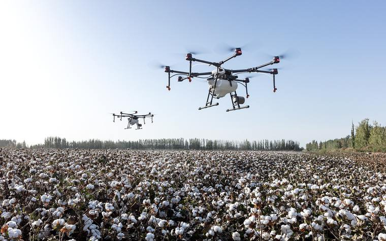

Tedarik Değil, Anlayış
Bir projenin neye ihtiyacı olduğunu biliyoruz; çünkü arkamızdaki grup projeleri bizzat yürütüyor.
Endüstriyel Varlık Şirketi
Projeyi anlayan iş ortakları gerektirir. BRAMS; Türkiye ve Avrupa'da altyapı gelişimine güç veren endüstriyel varlıkları tedarik etmek üzere kuruldu — ağır kaldırma ekipmanlarından hafriyat makinelerine, özel endüstriyel filolardan geleceğin mobilite çözümlerine kadar.
Endüstriyel Varlıklar. Altyapı. Gelecek.

Bir projenin neye ihtiyacı olduğunu biliyoruz; çünkü arkamızdaki grup projeleri bizzat yürütüyor.
Kuzey Amerika ve Avrupa üretimi ile bölgesel altyapı talebinin tam kesişiminde konumlanıyoruz.
Bugünün ekipman işi; filo, mobilite ve finansman hatlarının temelini oluşturuyor.
Tek siparişlerle değil; projelerle ve yıllarla ölçülen ortaklıklar kuruyoruz.
Kategori Tanımı
BRAMS bir endüstriyel varlık şirketidir.
Altyapı, enerji ve endüstriyel gelişimin dayandığı ekipmanı, araçları ve endüstriyel varlıkları tedarik eden, yöneten ve finanse eden bir organizasyon — yalnızca satış anında değil, tüm yaşam döngüsü boyunca.
Bu, "ekipman distribütörü" ya da "filo kiralama şirketi"nden bilinçli olarak daha geniş; "endüstriyel holding"den ise bilinçli olarak daha odaklı bir kategoridir. Otomotiv distribütörlüğü, filo finansmanı ve geleceğin mobilite çözümleri gibi yeni iş kollarını, markanın anlamını sulandırmadan eklememize alan tanır: çünkü bunların her biri aynı müşterilere ve aynı misyona hizmet eden bir endüstriyel varlıktır.
BRAMS Farkı
Ekipman distribütörlerinin ve kiralama şirketlerinin çoğu tüccardır: ekipmanı alır, satar ya da kiralar. BRAMS'ı taklit etmesi zor kılan şey ise şu: arkasında inşaat, altyapı geliştirme, yenilenebilir enerji ve tarım alanlarında bizzat faaliyet gösteren bir endüstriyel grup var.
Grubumuz altyapı ve yapı projelerini bizzat geliştiriyor. Sahayı raporlardan değil, işin içinden tanıyoruz.
Ekipmanı yalnızca teslim etmiyoruz; benzer varlıkları canlı projelerde çalıştıran bir grubun parçasıyız.
Bir yüklenicinin, geliştiricinin ya da kamu kurumunun bir makineden ne beklediğini tahmin etmiyoruz — o beklentiyi yaşadık.
"BRAMS, altyapıyı bizzat geliştiren bir grup tarafından kuruldu. Yalnızca ekipman tedarik etmiyoruz — projeleri anlıyoruz, çünkü onları işletiyoruz."BRAMS Konumlandırma İlkesi
Güç Verdiğimiz Sektörler
Sektördeki alışılmış yaklaşım, şirketi sattığı şeye göre tanımlamaktır. Biz neye güç verdiğimize göre tanımlanıyoruz. Bu, bir ton farkı değil, yapısal bir farktır.

01
Yol, demiryolu, köprü, havalimanı ve liman projeleri için ağır kaldırma, hafriyat ve sıkıştırma ekipmanları.

02
Rüzgâr, güneş, iletim hatları, hidrojen, batarya depolama ve kamu hizmeti şebekeleri için özel ekipman ve proje lojistiği.

03
Üretim tesisleri, madencilik, lojistik merkezleri, endüstri parkları ve veri merkezleri için ekipman ve filo programları.

04
Sulama sistemleri, soğuk hava depoları ve gıda işleme altyapısının kurulmasına yönelik ekipman ve çözümler.
Ne Sunuyoruz
Sektör anlatısı kimliğimizi taşır; ancak ne aradığını tam olarak bilen alıcılar için altında net bir ekipman ve yetkinlik katmanı bulunur.
Satış & Tedarik
Vinçler ve kaldırma ekipmanları, hafriyat makineleri, sıkıştırma ekipmanları ve özel inşaat makineleri. Küresel üreticiler ile bölgesel altyapı talebi arasında tek bir muhatap.
Esnek Kullanım
Proje bazlı ihtiyaçlar için esnek süreli kiralama. Yatırım yükü olmadan kapasite; sahadaki iş programına göre ölçeklenebilen bir ekipman havuzu.
Sektörler Arası Yetkinlik
Bugün endüstriyel filo programları; yarın filo kiralama, ekipman finansmanı ve Amerikan araç distribütörlüğü. Mobilite ve filo bilinçli olarak bir "sektör" değil, yukarıdaki tüm sektörleri kesen bir yetkinliktir — bu yüzden yeni iş kollarını yapıyı değiştirmeden içine alır.
Coğrafi Kimlik
Türkiye, Romanya, Avrupa ve Kuzey Amerika bizim için sevkiyat yaptığımız yerlerin listesi değil; şirketin kendi biçimidir. BRAMS, Kuzey Amerika ve Avrupa üretimi ile bölgenin en hızlı büyüyen altyapı pazarlarından birinin kesişiminde konumlanmış bir platformdur.
Dünya standardındaki makineye, doğru zamanda ve doğru koşullarla erişim. Tedarik zincirinde tek muhatap, sahada tek sorumluluk.
Yerel bir bayiden çok, bir pazara giriş platformu. Üreticiler, bankalar ve ihracat kredi kuruluşları için değerlendirilebilir, sürdürülebilir bir yapı.
Yol Haritası
Vinçler ve iş makineleri, bu rolün bugünkü ifadesi. Filo kiralama, ekipman finansmanı ve Amerikan araç distribütörlüğü sırada. Otonom ve elektrikli ekipman, akıllı telematik ve proje finansmanı ise sonraki ufuk. Hiçbiri BRAMS'ın "artık sadece bir vinç şirketi olmadığını" açıklamasını gerektirmiyor — kategori hiçbir zaman o kadar dar değildi.
Bugün
Ekipman
Sırada
Filo & Finans
Ufuk
Geleceğin Varlıkları
Kiminle Çalışıyoruz
İş programına uyan, arıza süresi düşük, servisi öngörülebilir ekipman arayan yükleniciler.
Altyapı, enerji ve endüstriyel yatırımlarını ekipman riski almadan planlamak isteyen geliştiriciler.
Şeffaf tedarik, belgelendirilebilir teknik uygunluk ve uzun vadeli hizmet sürekliliği bekleyen kurumlar.
Bölgeye giriş için yerel bayiden fazlasını — bir dağıtım platformu — arayan ekipman ve araç üreticileri.
BRAMS'ı finanse edilebilir, kalıcı bir iş modeli olarak değerlendiren bankalar ve ihracat kredi kuruluşları.
Sahiplenme yükü olmadan kapasiteye ihtiyaç duyan kiralama ve filo tedarik ekipleri.
Ekipman tedariki, kiralama, filo programları ya da distribütörlük ve ortaklık görüşmeleri için ekibimize ulaşın. Türkçe ve İngilizce yanıt veriyoruz.